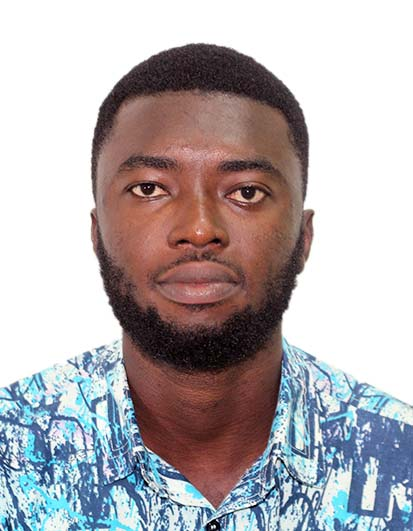

Samuel Bossman | WDD 130
Hello! My name is Samuel Bossman, and I am from Takoradi, Ghana. I enjoy eating fried rice and chicken. I am currently enrolled at BYU PATHWAY as a software development student. I am Ghanaian and the first of my parents.
Hello! My name is Samuel Bossman, and I am from Takoradi, Ghana. I enjoy eating fried rice and chicken. I am currently enrolled at BYU PATHWAY as a software development student. I am Ghanaian and the first of my parents.